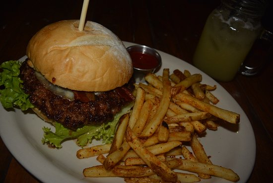
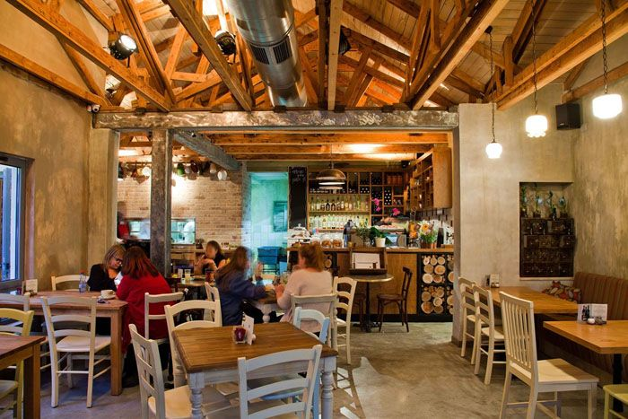
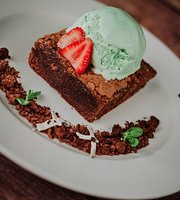

Rústico Bistro es un restaurante acogedor y moderno ubicado en el corazón de San Salvador. Se especializa en cocina internacional con un toque gourmet, combinando ingredientes locales frescos con técnicas contemporáneas. Su ambiente bohemio y elegante lo convierten en el lugar perfecto para cenas románticas, reuniones entre amigos o experiencias gastronómicas únicas.
Horarios: Mar - Dom: 12:00 - 22:00
Teléfono: +503 7564-3210
Bulevar El Hipódromo, Zona Rosa, San Salvador, El Salvador.
Cómo llegar: Situado en la exclusiva Zona Rosa, rodeado de bares y restaurantes. Fácil acceso desde Bulevar del Hipódromo y parqueo disponible en la zona.



Excelente ambiente y la comida estuvo espectacular. El filete es de los mejores que he probado en San Salvador.
El lugar es muy acogedor, la atención buena aunque en horas pico hay que esperar un poco.
La pasta Alfredo estuvo deliciosa y el brownie con helado fue el toque perfecto para cerrar la noche.